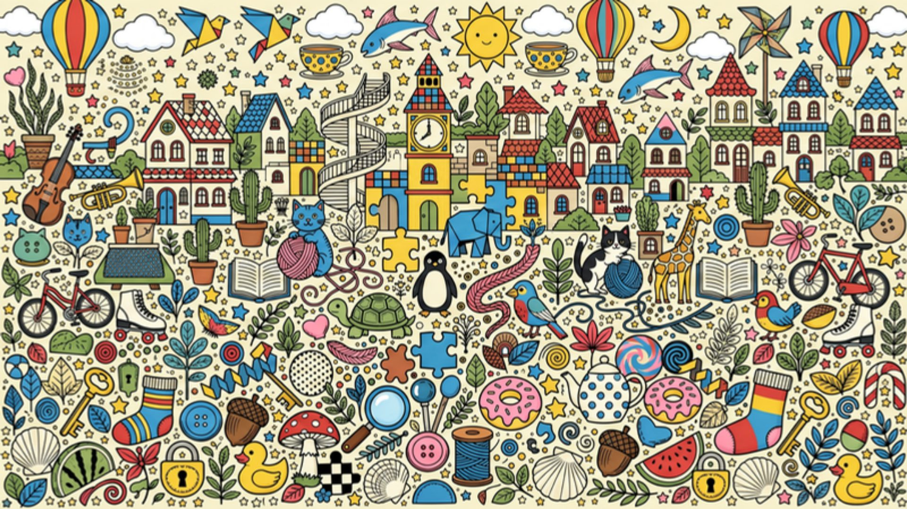

우리는 어떻게 하나님의 뜻을 분별할 수 있는가?

그 밑에는 이런 그림이 있습니다.
하나님의 뜻은 외줄 하나, 발을 헛디디면 끝이다. 그래서 틀릴까 봐 두렵다.
그리고 더 깊은 곳의 질문 하나.
틀리면, 하나님이 나를 떠나실까?
정답을 숨겨 두고 우리가 맞히기를 기다리시는 분이 아니라,
자녀의 길을 인도하시는 아버지
하나님의 음성은 먼저 성경에서 들립니다. 말씀이 기준입니다.
성령께서 말씀을 비추시고 마음에 감동을 주십니다.
그 인도가 내 소리인지, 함께 말씀 앞에서 확인합니다.
마음의 인도는 말씀과 공동체로 검증합니다.
거기 계시고 지금도 말씀하시는 하나님
세 가지로 나누어 보는 하나님의 뜻
그 뜻 안에서 대화하며 나아가는 하나님과 동행
O일까요, X일까요?
감정은 검증의 도구가 아니라 검증받을 대상입니다.
예수님은 겟세마네에서 평안하지 않으셨고, 요나는 도망치는 배 밑에서 깊이 잠들었습니다.
열린 문은 답이 아니라 질문의 시작입니다.
열린 문 앞에서는 "가도 되는가"보다 "어떻게 분별할까"를 묻습니다.
드러난 뜻 안에서 지금 걷는 것이 순종입니다.
하나님은 보통 말씀, 기도, 공동체, 형편이라는 방편으로 인도하십니다.
직장 이름은 없습니다. 거룩함과 감사가 있습니다.
자기중심성과 자기 의에서 벗어나는 것, 그것이 하나님의 뜻의 중심입니다.
연구실에서는 사실의 영역에 살고,
주일에는 가치의 영역에 올라갑니다.
"어떻게"는 객관, "왜"는 주관. 두 층 사이에는 계단이 없습니다.
말씀이라는 내용 없이 뛰어오른 음성은 내 목소리와 구별되지 않습니다.
하나님은 "왜"에 대해서도, 역사와 세상의 "어떻게"에 대해서도 참되게 말씀하셨습니다.
그래서 신앙은 근거 없는 도약이 아니라, 진리 위에 서는 것입니다.
하나님은 거기 계시고, 지금도 말씀하십니다.
"기독교는 정말 참인가?" 처음부터 다시 따져 보고, 그 진리가 왜 삶에서 실제가 되지 않는지 물었다.
하나님의 뜻은 한 번에 받아 놓는 것이 아니라, 오늘 드러난 뜻 안에서 매 순간 신뢰하며 걷는 것.
내 힘으로 이루려 애쓰지도, 손 놓고 기다리지도 않는다. 약속을 믿고 나를 내어드리며 걷는다.
진리가 하나이니, 삶도 하나입니다. 하나님의 뜻은 오늘 이 자리에서 순간순간 믿음으로 걷는 길입니다.
하나님의 뜻에는 세 가지가 있습니다
| 하나님의 뜻 | 무엇인가 | 우리의 자세 |
|---|---|---|
| 작정적 뜻 decretive will | 주권적으로 정하시고 반드시 이루시는 뜻. 다스리신다는 사실은 선명하나, 세부는 대부분 지나온 뒤에 보인다 시간 속에서는 섭리로 이루어진다 | 신뢰한다 |
| 교훈적 뜻 preceptive will | 성경에 드러내신 명령. 매일 깨질 수 있지만, 분명히 드러나 있다 | 순종한다 |
| 기뻐하시는 뜻 will of disposition | 하나님이 마음으로 기뻐하시는 것. 그분의 성품 | 닮아 간다 |
악인의 죽음을 기뻐하지 않으시고, 돌이켜 사는 것을 기뻐하신다
그 마음이 명령이 된다. "돌이키고 돌이키라"
끝내 돌이키지 않으면 정하신 공의는 이루어진다
형들은 명령을 어겼고, 하나님은 그 악을 기뻐하지 않으셨으며, 그러나 정하신 구원은 이루어졌습니다.
정하신 뜻이 있었다고 사람의 죄가 가벼워지지 않습니다.
하나님은 숨기신 것을 찾으라 하지 않으시고,
드러내신 것을 행하라 하십니다.
첫 명령은 넓은 허락으로 시작합니다.
울타리 안에서는 자유롭게 고릅니다.
하나님 자신의 영광과 사람의 구원과 믿음과 삶에 필요한 모든 것에 관한 하나님의 온전한 뜻은 성경에 분명히 기록되어 있거나, 선하고 필연적인 추론으로 성경에서 이끌어 낼 수 있다. 그러므로 성령의 새로운 계시로든 사람의 전통으로든, 어느 때에도 성경에 아무것도 더할 수 없다. 그러나 말씀에 계시된 것을 구원에 이르도록 깨닫는 데에는 하나님의 영의 내적 조명이 필요하다. 또 하나님을 예배하는 일과 교회를 다스리는 일에는 사람의 활동과 모임에 공통된 몇몇 정황이 있는데, 이것들은 언제나 지켜야 할 말씀의 일반 원칙을 따라 자연의 빛과 그리스도인의 분별로 정해야 한다.
삶에 필요한 하나님의 뜻은 성경에 있다. 새 계시로 더할 것이 없다.
그 말씀을 깨닫게 하시는 분은 성령이시다. "음성 듣기"는 말씀이 내 삶에 비추어지는 일이다.
예배와 교회의 세부도 말씀의 일반 원칙을 따라 그리스도인의 분별로 정한다. 우리 삶의 결정도 같은 길을 걷는다.
작정은 들판 어딘가에 숨겨 두신 한 갈래 길이 아니라,
들판 전체를 받치고 있는 땅입니다.
하나님은 기뻐하지 않으시는 일까지 선으로 바꾸시는 분입니다. 대부분은 지나온 뒤에 보이고, 끝내 다 보이지 않는 일도 그분의 선하심 안에 있습니다.
순간순간의 믿음으로, 적극적 수동성으로 걷습니다.
하나님은 작정하신 일을 기뻐하시는 방식으로 이루시고, 영광을 받으십니다.
드러난 뜻
성경이 명하거나 금했다
→ 순종한다
울타리 안의 자유
드러난 뜻 안에서 지혜로 고른다. 하나님이 기뻐하실 길을 생각한다
→ 자유롭게, 지혜롭게
감추어진 뜻
내가 정할 수 없고, 하나님이 이유를 다 알려 주지 않으신 일
→ 신뢰하고, 지나고 나서 감사
초록 칸의 길은 하나가 아닙니다. 기뻐하시는 뜻은 정답 하나가 아니라, 우리가 헤아리는 아버지의 마음입니다.
초록. 몸풀기입니다. 이것까지 응답받으려 하면 첫째 오해(숨은그림찾기)입니다.
파랑, 그리고 다음 걸음은 초록. 닫힌 문도 섭리의 한 방식입니다. 일어난 모든 일이 하나님이 기뻐하신 일은 아닙니다. 그러나 그 일도 하나님의 손 밖에 있지 않습니다.
빨강과 초록이 섞였습니다. 덮어 줄 수는 없습니다. 어떻게 말할지는 지혜로 고릅니다. 연구 부정은 보고 의무가 따르기도 하니 학교 규정을 먼저 확인합니다.
빨강의 원칙, 초록의 적용. 주일은 일상의 일을 미리 정리한 뒤 거룩한 안식과 예배로 보내는 날입니다. 부득이한 일과 자비의 일은 그날에 할 수 있습니다. 정말 그 시간에만 할 수 있는가, 그 주의 예배를 어떻게 지킬까를 함께 묻습니다.
초록. 어디서 더 잘 섬길 수 있는가, 가족의 책임, 뿌리내릴 교회.
그리고 한 가지 더: 혹시 다들 그쪽으로 가니까 끌리는 것은 아닌가요?
초록. 하나님은 정답 배우자 한 명을 숨겨 두시지 않습니다. 믿음과 성품, 공동체의 조언 안에서 기쁘게 고릅니다. 결혼한 뒤에는 그 사람과 맺은 언약이 드러난 하나님의 뜻입니다.
빨강(부모를 공경하라)과 초록(전공의 선택). 공경은 순종과 같은 말이 아닙니다. 성인 자녀로서 공경하며 고르는 길을 함께 생각합니다.
하나님은 우리가 그분의 마음으로 고르는 친구로 자라기를 원하십니다 · 윌라드
다섯 질문을 하나씩 나누며, 그 자리에서 한 줄씩 적습니다.
성경이 이미 명하거나 금한 것이 있는가
은사와 형편은 하나님이 보통 쓰시는 길이지만, 하나님 능력의 한계선은 아닙니다.
내 계산을 앞세우지 않고 믿음으로 걷습니다.
멈추고 다시 구하며, 그 사람들과 공동체에 여쭙니다.
"네 명철을 의지하지 말라 … 범사에 그를 인정하라" (잠언 3:5~6)
누구의 인정을 받지 못한다 해도, 나는 이 길을 원할까?
우리가 원하는 것의 상당수는 누군가를 따라 원한 것입니다.
비교와 시기에서 우리를 건지는 것은 억누름이 아니라, 하나님 안에서 누리는 만족입니다. (쉐퍼, 『진정한 영적 생활』의 논지)
나를 알고 말씀을 아는 사람은 어떻게 보는가 · 이 일을 물어볼 사람의 이름 하나
이 결정을 하나님 앞에 감사로 내어놓을 수 있는가
요란하지 않지만, 조용한 권위가 있다
평화롭고 온유하며, 사랑의 결을 지닌다
성경의 가르침과 어긋나지 않는다. 마지막 기준은 말씀
환경은 신호가 아니라 자료입니다.
열린 문도, 닫힌 문도 그것만으로는 답이 아닙니다.
1 말씀 · 2 지혜 · 3 욕망 점검 · 4 공동체 · 5 기도
결정의 내용은 말하지 않아도 됩니다.
세 칸과 다섯 질문으로 함께 풀어 봅니다
먼저 누구의 것인가, 그다음에 무엇을 할 것인가
브살렐은 뽑히려고 솜씨를 부린 사람이 아니었습니다. 하나님이 먼저 이름을 불러 지명하시고 그 영으로 채우셨기에 솜씨를 다했습니다. (출애굽기 31장)
예정은 길을 알려 주는 교리가 아니라,
걷는 사람을 붙드는 교리입니다.
아직 낯설다면 빈칸을 비워 둔 채, 하나님이 그 자리에 무엇이라 써 주실지 묻는 것으로 시작해도 됩니다.
마음속으로 기도해도 됩니다.
하나님의 자녀는 정답을 맞혀서 사랑받는 것이 아니라, 사랑받기에 자유롭게 선택합니다.